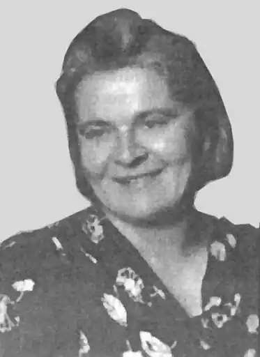

Галина Сергіївна Мазуренко народилася 25 грудня 1901 р. у Санкт-Петербурзі в родині студента Петербурзького університету Сергія Боголюбова (нащадка дворянського роду, професора, історика Татищева) та випускниці Воронезької гімназії Єлизавети Мазуренко (просвітниці, сестри братів Мазуренків – діячів революційного руху в Україні, нащадків козацького роду).
Дитинство Галини проходило в маєтку неподалік від Тули. Невдовзі після розлучення батьків вона з матір'ю переїздить до Швейцарії, де мати бере другий шлюб з інженером Олександром Сергієнком. Сім'я оселилася в Катеринославі, де відбулися перші літературні спроби Галини. Її вітчим дбав, щоб дівчина здобула гарну освіту. У Катеринославі вона навчалася в комерційному училищі С. Степанової та малярській школі імпресіоніста В. Корнєва. Галина Мазуренко вільно володіла французькою мовою, рано почала писати вірші та виявляла неабиякий хист до живопису. Деякий час вона мешкала у тітки Марії Мазуренко, яка була заміжня за катеринославським меценатом та комерсантом Володимиром Хренніковим.
Під час Першої світової війни 15-річна Галина разом із дядьком Семеном Мазуренком допомагала пораненим на фронті. Упродовж 1917-1921 рр. перебувала в армії Української Народної Республіки, за що згодом була нагороджена "Хрестом залізного стрільця". У 1919 р. закінчила гімназію М. Ветроградова в Катеринославі. Одразу ж склала іспити на історико-філологічний факультет Катеринославського університету. Тісно спілкувалася з Дмитром Яворницьким. Після поразки Директорії УНР Галина Мазуренко в 1920 р. була змушена емігрувати. Спочатку жила у Варшаві, потім – у Берліні. У 1923 р. переїхала до Праги, де навчалася в Українському Вільному університеті, Вищому педагогічному інституті ім. М. Драгоманова та в Українській академії мистецтв (займалася в майстерні знаних професорів І. Мозолевського, Р. Лісовського, К. Стаховського, І. Кулеця та С. Мако). У 1929 р. захистила докторську дисертацію. У Чехословацькій республіці Галина Мазуренко тісно спілкується з представниками "празької школи" українських письменників (Є. Маланюком, Ю. Дараганом, О. Телігою, О. Лятуринською, Н. Левицькою-Холодною та ін.). Власне, перебуваючи в Чехословацькій республіці, 25-річна Галина Мазуренко публікує свою першу поетичну збірку "Акварелі", а згодом: "Стежка" (1939), "Вогні" (1939) та "Снігоцвіти" (1941). Через 2 десятиліття вже в Лондоні вийшли її поетичні збірки: "Пороги" (1960), "Ключі" (1969), "Зелена ящірка" (1971), "Скит поетів" (1971), "Золота корона" (1972), "Три місяці в літері життя" (1973), "Північ на вулиці" (1980), а також книжка мемуарної прози "Не той козак, хто поборов, а той козак, хто "вивернеться"" (1974). Друкувалася в журналах "Вісник" і "Пробоєм", інших періодичних виданнях Чехії. У 1930-х роках Галина Мазуренко вийшла заміж за Євгена Равича, у шлюбі з яким мала 2 дітей. На жаль, первісток помер, а донька Марина була хворобливою і з 2 років жила з бабусею Єлизаветою (Мазуренко) в Україні. Бабуся разом із чоловіком Степаном Гончаровим удочерили Марину. Проте, у 1935 р. Єлизавету Мазуренко було заарештовано за звинуваченням у проведенні контрреволюційної націоналістичної діяльності серед молоді. Дівчинка залишилася жити з вітчимом, який виховував її як рідну дочку. Розлучившись з Євгеном Равичем, Галина Мазуренко узяла шлюб з Олександром Байковим, від якого народила сина Олеся та доньку Лялю. У 1944 р. вона працювала лекторкою на кафедрі Дмитра Антоновича в Українському Вільному Університеті, навчалася в Українській академії пластичного мистецтва. У 1945 р. емігрувала до Лондона, де з 1940 р. вже перебував її другий чоловік. Там вона працювала в друкарні, у студії-ательє відомого польського художника, професора Шишка-Богуна та викладала у коледжі при Лондонському університеті. Першу виставку живописних творів Галина Мазуренко експонувала вже в зрілому віці. Зокрема, упродовж 1961-1973 рр. її роботи, виконані переважно аквареллю, пастеллю та у змішаній техніці, презентувалися у Великобританії, США, Ісландії та Пакистані. У 1969 р. Галина Мазуренко започаткувала гурток живопису "Tuesdays", який майже 30 років збирав щовівторка всіх бажаючих в її оселі. У 1992 р. мисткиня стала членом Спілки письменників України. Г. Мазуренко була співзасновницею Об'єднання українських письменників в еміграції "Слово". Померла 27 травня 2000 р. в Лондоні за рік до свого 100-річчя.